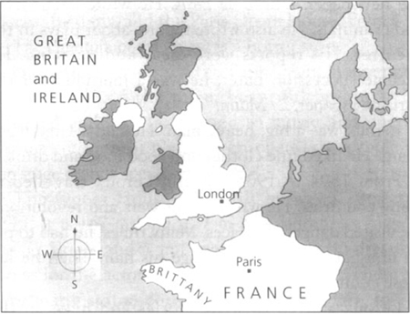

Một Ghi chú về Tác giả
Một Ghi chú về Truyện này
Nhân vật trong Truyện này
1 Thiên thần Âm nhạc
2 Bữa tiệc ở Nhà hát Opera
3 Raoul đến Nhà hát Opera
4 Ghế số 5
5 Chiếc gương trong Phòng thay đồ
6 Vũ hội hóa trang
7 Câu chuyện của người Ba Tư
8 Christine mất tích!
9 Bên dưới Nhà hát Opera
10 Hồ nước và Cây đàn
11 Bóng ma Nhà hát Opera
